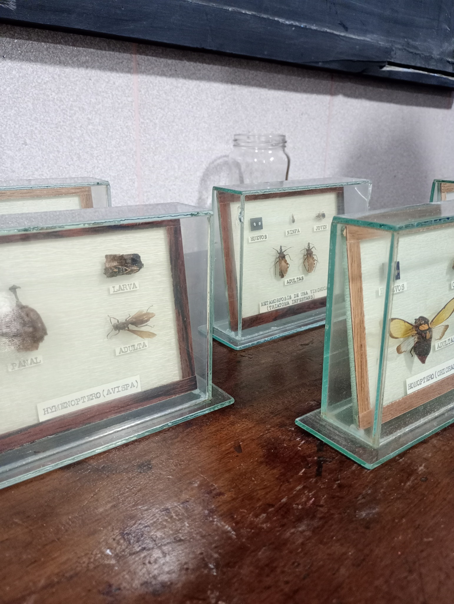
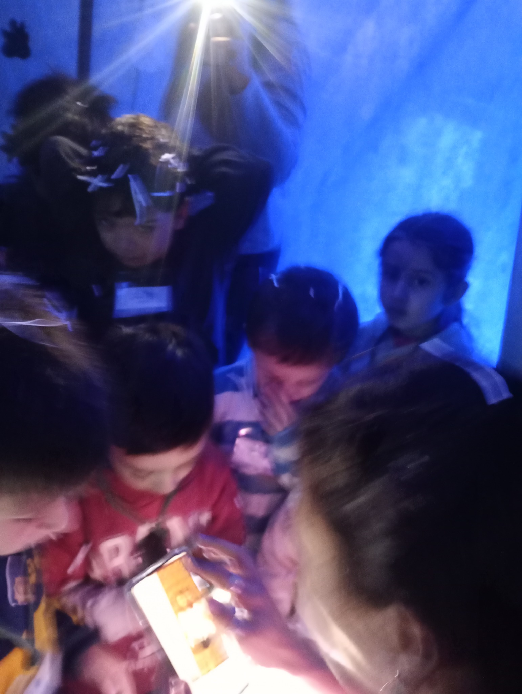
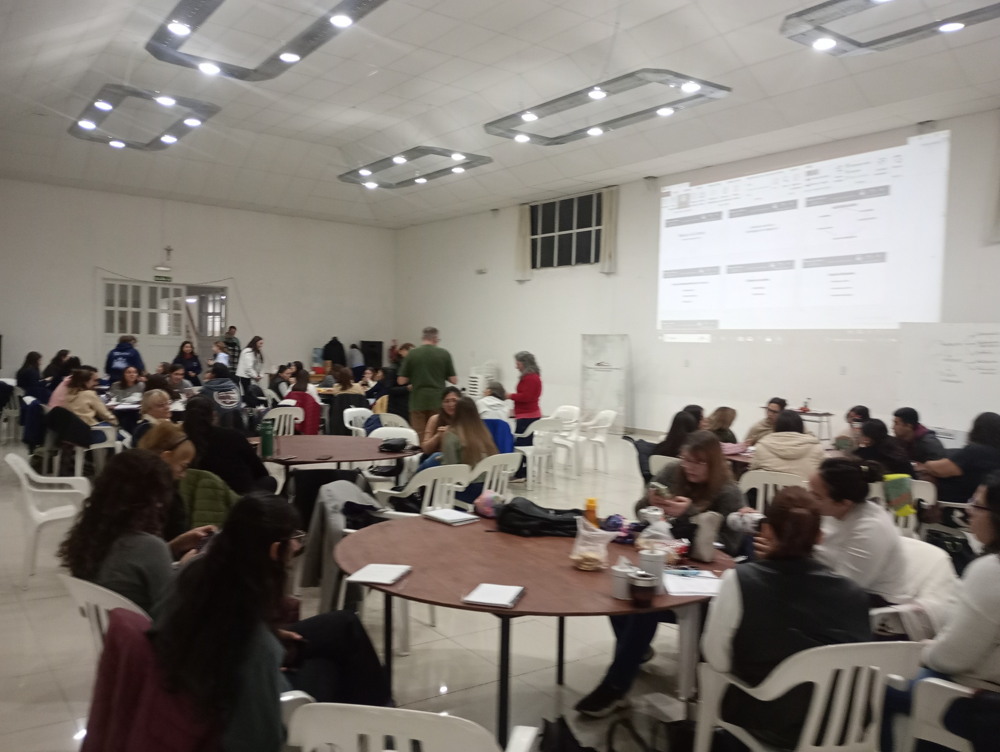
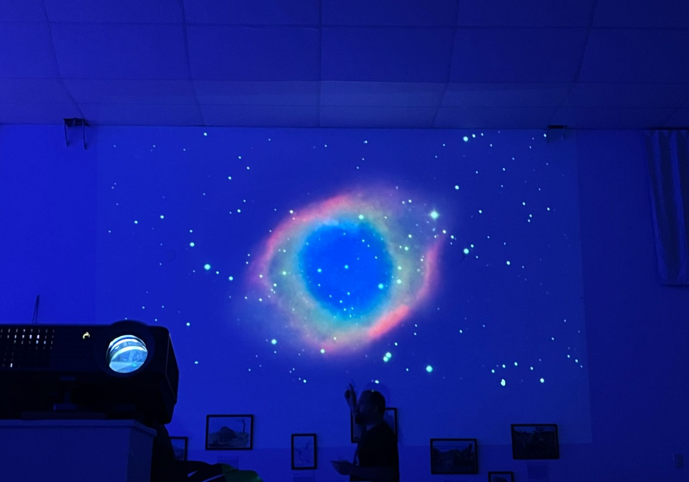

Fósiles y colecciones
El río que fue mar, fósiles de Ramallo y piezas para observar de cerca.
Una jornada que se vive
Durante nueve días, el Museo Scasso reúne fósiles, fauna actual, plantas acuáticas, arte, mitos, investigación científica, patrimonio y problemas ambientales del Paraná. No es una muestra estática: cada día suma charlas, talleres, mesas con especialistas y actividades distintas.


Qué vas a encontrar
Una programación concreta, con investigadores, docentes, artistas e instituciones que trabajan sobre el Paraná y su territorio.

El río que fue mar, fósiles de Ramallo y piezas para observar de cerca.

Fauna, conservación, historia, geología, ambiente y patrimonio.
Fotografía, biogeografía, microscopía, arqueología, arte y animales prehistóricos.

Proyecciones e inmersiones audiovisuales con apoyo de Fundación Acindar.
Los cuatro ejes
Fauna, paisaje, navegación, costa, pesca, acuarelas y vida cotidiana alrededor del río.
Fósiles, sedimentos, organismos, antiguas faunas y la historia de un territorio que también fue mar.
El Jaguarón, el carpincho blanco y otros seres y relatos de la mitología local.
Áreas protegidas, reservas urbanas, conservación de especies, educación ambiental y futuro del Paraná.
Muestras y arte

Gigantografías de Jorge Blanco integran el recorrido del Río desconocido. La muestra tendrá un recorrido presentado por Analía Forasiepi.
Fósiles de Ramallo.

Megafauna de las barrancas del Paraná · Miguel Ángel Lugo.

Eugenia Romero · obra y demostración en vivo.
Programa preliminar
El programa continúa ajustando algunos horarios, pero estas son las actividades previstas hasta el momento. Las mesas expositivas y las instalaciones funcionan en paralelo.
Para infancias y familias
Las actividades para infancias no son un agregado: forman parte central de las Jornadas.
Fotografía de naturaleza.
Biogeografía.
El mundo microscópico.
Animales prehistóricos.
Con Daniela Beltrami.
Taller de arte para infancias de 5 a 12 años.
Elegí tu entrada desde el sistema de reservas de Mundos Perdidos. Una entrada corresponde a un día y permite participar de las propuestas incluidas para esa jornada según programación y cupos.
Durante las jornadas
Información, anuncios, entrevistas, podcasts y streaming. Coordinación: Nicolás Malacalza. Conducción: Walter Álvarez, Alejandro Martínez y Román Roncolatto.
Proyecciones e inmersiones audiovisuales con apoyo de Fundación Acindar.
Expo del Libro, Isla de Juegos, Paleobar La Mordida, Jardines flotantes y observación astronómica según programación y clima.
Dónde
Don Bosco 580 · San Nicolás de los Arroyos · Buenos Aires
Del 26 de septiembre al 4 de octubre de 2026.